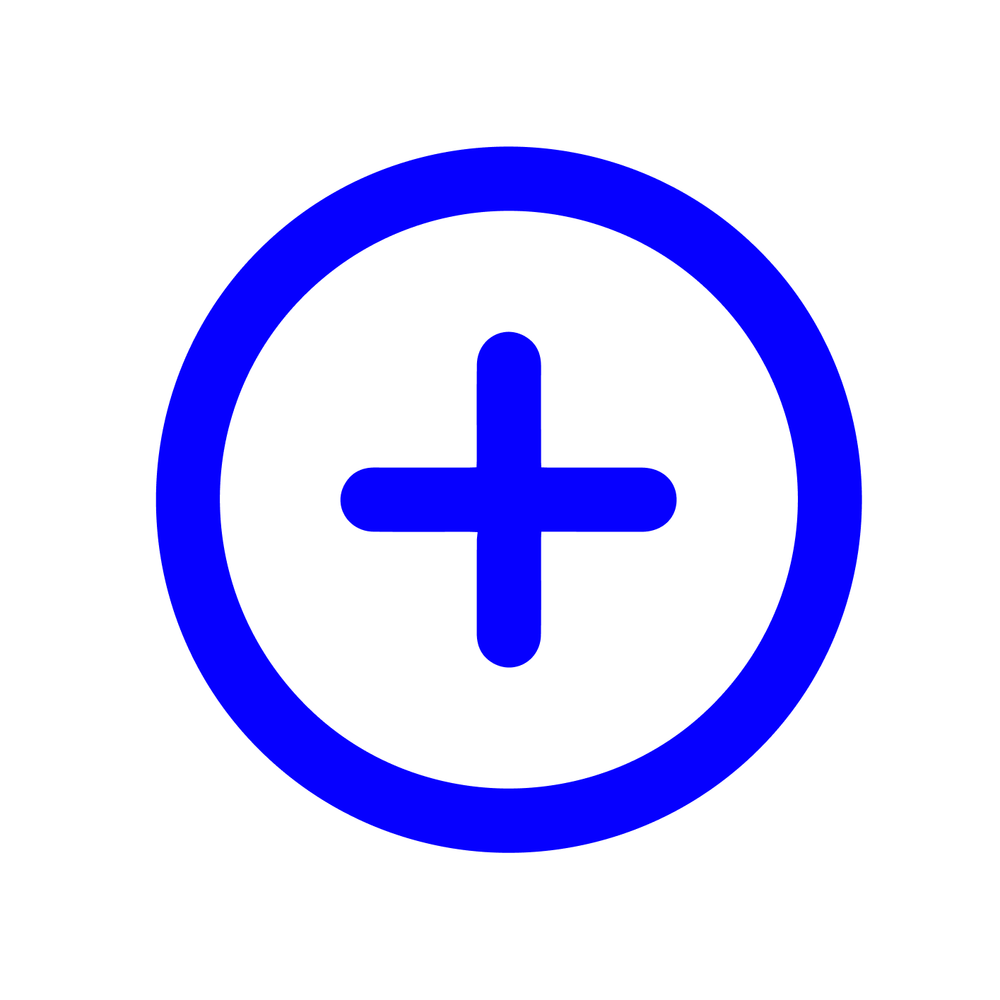

<ion-content>
  <ion-content>
    <div *ngIf="selectedOption === 'home'" class="Home">
      <app-home />
    </div>

    <!-- Componente View-Mazo -->
      <div *ngIf="selectedOption === 'mazo'" class="Mazo">
        <div *ngIf="decks.length === 0" class="contentOption2">
          
          <button class="contentTouch" (click)="openModal()">
            
            <p>Toca para crear un nuevo mazo</p>
          </button>
        </div>

        <div *ngIf="decks.length > 0" class="contentOption1">
          
          <div class="body">
            <app-decks
              *ngFor="let deck of decks"
              [title]="deck.title"
              [description]="deck.description + ' cartas agregadas'"
              [routerLink]="['/inside-deck-view']"
              [queryParams]="{ deckId: deck.id }"
            ></app-decks>
          </div>
          <button class="add" (click)="openModal()">
            
          </button>
        </div>
      </div>
    <!-- Componente View-Mazo -->
    <div *ngIf="selectedOption === 'user'" class="userSettings">
      <app-profile />
    </div>
  </ion-content>

  <!-- <app-modalSelection
    [message]="'Quieres cambiar el idioma de la aplicacion al que tu quieres aprender?'"
  /> -->
  <app-navbar />
  <app-modal-create-decks
   [isVisible]="isModalVisible"
   (close)="closeModal()"
   />
   <app-loading *ngIf="isLoading"></app-loading>
</ion-content>
